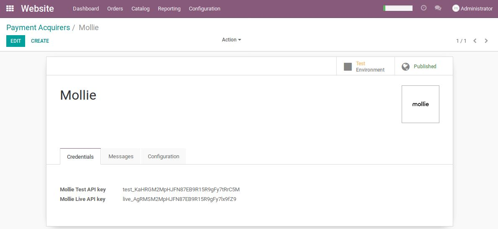
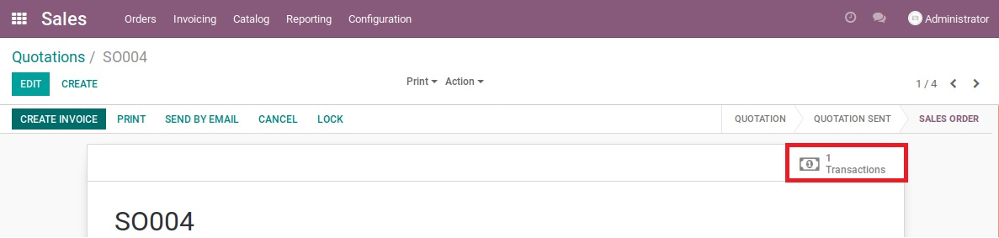

Go to Invoicing > Payments > Payment Acquirers -> Mollie and add the API keys (test and/or live) from your Mollie account here:  Depending on the button at the top you can choose if you want to use Mollie for testing purposes (with the test API) or if you want to use it for production (with the live API key). Make sure that you activate the payment method too as it is not activated by default.
When the Mollie payment acquirer is configured correctly, you can see the Mollie payment option at the time of checkout. You will not see Mollie as long as there are no payment methods configured on the payment acquirer. You will first have to add payment methods to your account on the Mollie website and then configure it under the tab "Configuration" of the payment method Mollie in Odoo. The customer will be redirected to the Mollie payment methods screen after choosing Mollie in the webshop.
Mollie will automatically redirect the customer after the payment to Odoo and a payment is made on the sale order:

You will need the Python package "mollie-api-python" for using this application.
You can install this requirement from the requirements.txt file or from the command line.
From the requirements.txt file:
sudo pip3 install -R requirements.txt
From the terminal:
sudo pip3 install mollie-api-python==1.2.0